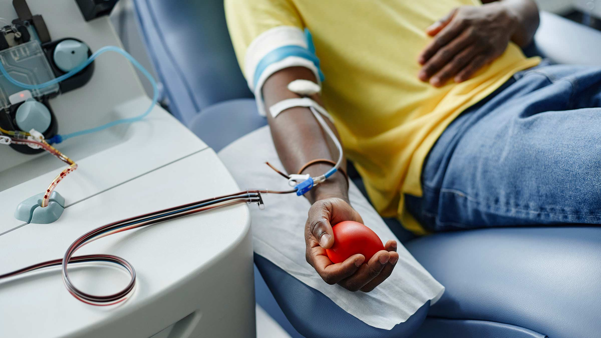
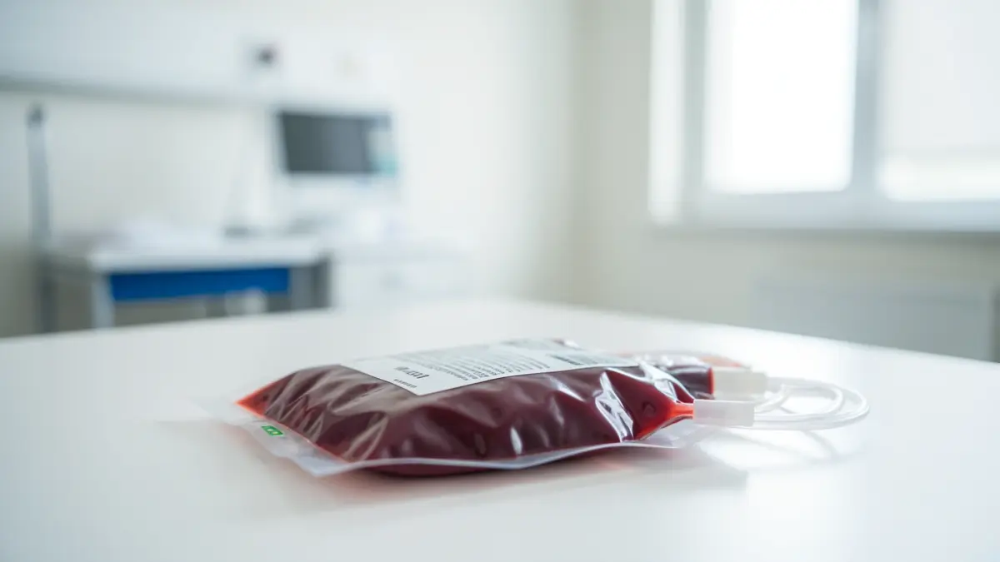
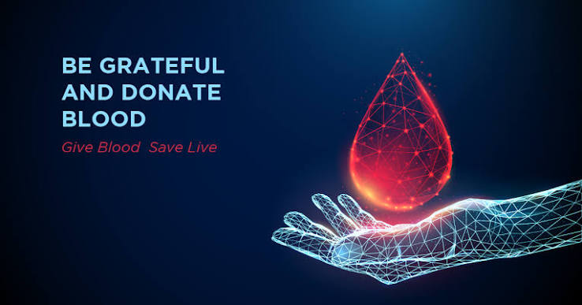

Your Blood
Saves Lives.
Every two seconds someone needs blood. Register as a donor today, find a drive near you, and track your impact in real time. Use our system to find local blood drives, or simply visit the blood bank at any government hospital in Sri Lanka.
Why Donate
Blood?
Every two seconds in this country someone needs blood. A single donation can save up to three lives — for surgery patients, trauma victims, and people with chronic conditions like cancer and sickle cell disease.
Your 45 minutes can change everything for a family waiting in an emergency room.


Who Can
Donate?
Most healthy adults aged 17–65 who weigh at least 50 kg are eligible. You can donate whole blood every 56 days. Our quick pre-screening checks haemoglobin, blood pressure, and pulse before every session.
Not sure if you qualify? Take our 2-minute eligibility check online before booking.
Trusted
Nationwide
Network
BloodLink partners with over 420 hospitals, 90 community blood banks, and 600+ volunteer drive organizers across the country. Real-time inventory data ensures every unit is routed where it is needed most.
All collected blood is screened, typed, and processed within 24 hours.

How To Donate
Register Online
Create your donor profile with your health history and contact details in under 5 minutes.
Book A Slot
Choose from nearby donation drives or walk-in centres that fit your schedule.
Donate
The whole process takes 45–60 minutes including a short rest and refreshments.
Track Your Impact
Receive real-time updates when your donation is matched and used to save a life.